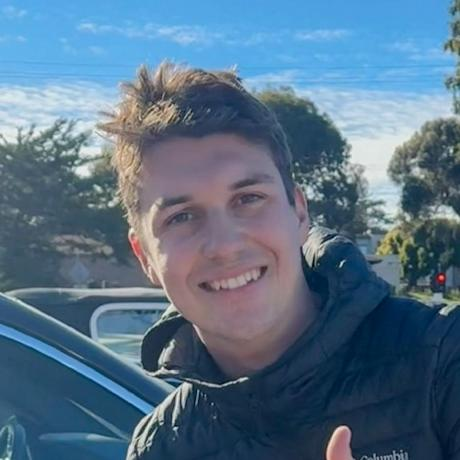

robin schmid
about
I am fascinated by deploying robots in the real world and understanding how we can leverage simulation to train and evaluate autonomy. My work has ranged from legged robots hiking in the Alps and off-road driving in the desert to building simulators for autonomous systems.
previous
I was a research engineer at the Robotic Systems Lab at ETH Zurich, where we taught a legged robot to hike on its own (ROAM, published in Science Robotics). Before that, I was a visiting researcher at NASA JPL, working on perception for the DARPA RACER off-road driving programme and on the DARPA Subterranean Challenge. I studied robotics and mechanical engineering at ETH Zurich.
reading
- github: github.com/robin271828
- linkedin: schmid-robin